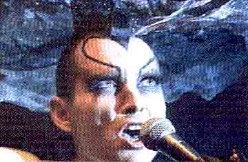
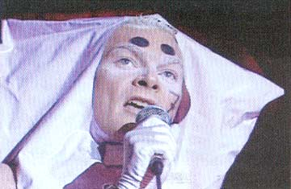
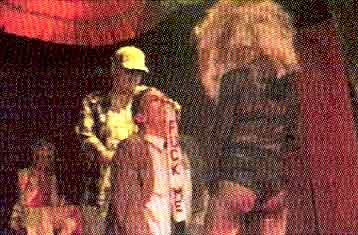

| April 2003 |
| ARTY FARTY | |
| Skribent | Alf |
| Hvad | Cabaret |
| Hvor | Operaen, Christiania |
| Fotoserie | Jørgen Callesen |
Aftenens vært var Hairwerk (Tammy Holestreams mandlige alter ego), der lagde ud med sin nye sang "Mob". dunst cabareten var prøget af tidens dunkle temaer som nihilisme, weltsmertz og fremmedgørelse, der blev sat i relief af skæve indslag, en høj glitterfaktor og cabaretstilens galgen humor.
Efter showet blev gulvet ryddet for at give plads til dj Minimal Martin og Nicu, der styrede dansegulvet med sikker hånd til meget sent.



"Down and out", hvor den pæne bankfunktionær får "enden
på komidie", indtil han reddes af gæstestjernen PUTA.
Print denne side